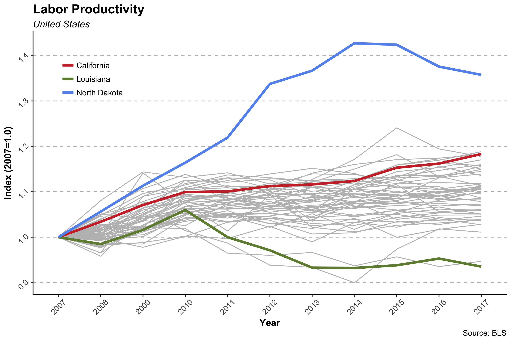
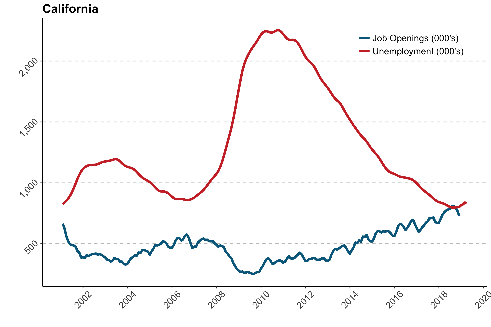

Bureau of Labor Statistics: New State Data
The Bureau of Labor Statistics (BLS) recently released state-level productivity measures. Productivity is defined as output per hour. The new data reveal a sharp rise for California, only North Dakota had higher growth in productivity by the end of the series.

The BLS also recently released state-level Job Openings and Labor turnover Survey measures. The latest data show 835,475 (April, 2019) unemployed persons and 727,576 (December, 2018) announced job openings in California. In October of 2010, at the peak unemployment for California, there were 2,253,816 unemployed persons and 360,154 openings....or 6.3 unemployed persons for each opening. Today that number is closer to 1.1 unemployed persons for each job opening.
